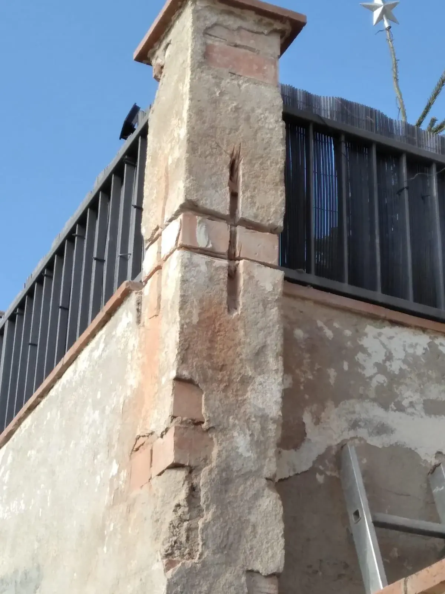
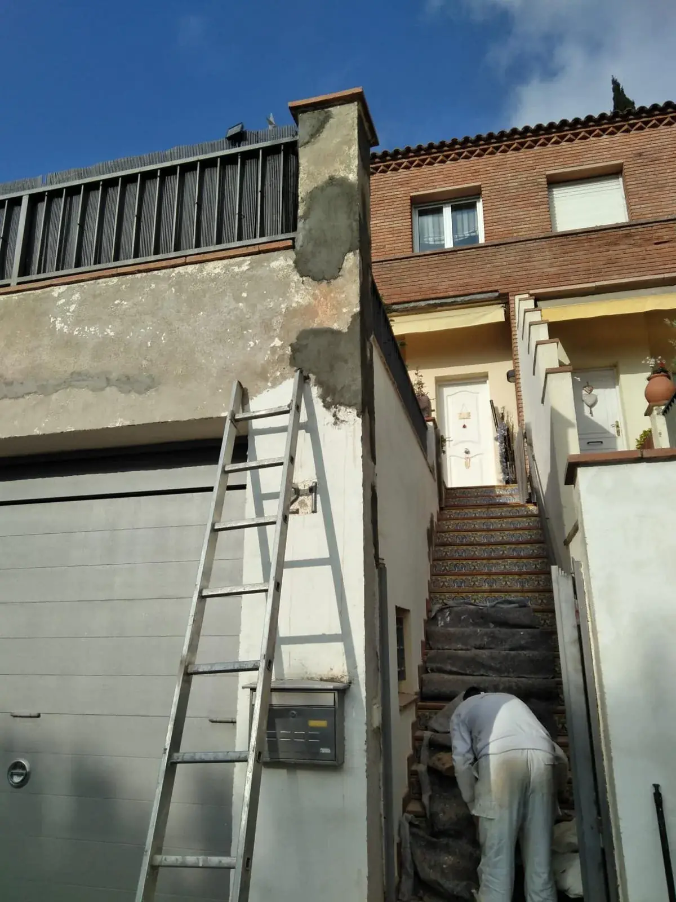

BCN ProReforma · Empresa familiar desde 1994
Pintura, estucos y microcemento para casas y pisos del Maresme y Barcelona
Proyectos de pintura y revestimiento con la preparación y el acabado cuidados de principio a fin.



Quién hace el trabajo
- Oficio
- Mohamed Ben Mesaud. Pintor desde hace más de treinta años. Valora cada superficie, decide cómo prepararla y está en la obra hasta el último repaso.
- Atención
- Omar Ben Mesaud. Atiende tu consulta, organiza la visita y el presupuesto, y es tu contacto durante toda la obra.
- Base
- Cabrils. Trabajos en el Maresme y Barcelona.
- Gremi
- Agremiados en el Gremi de Pintors de Barcelona desde 1994.
Obras documentadas
-


Microcemento
Baño de microcemento con ducha de obra
Suelo, paredes y plato de ducha en un mismo revestimiento continuo, con desagüe lineal y murete de obra.
MunicipioNo publicado
-

Fachadas y exteriores
Reparación y pintura de una fachada
Pilar y muro con el revoque desprendido. Reparación del soporte y fachada pintada de nuevo.
MunicipioMataró
-


Lacados y barnizados
Barnizado de la carpintería de madera de un ático
Marcos y vigas agrisados por el sol. Lijado y barniz para recuperar la madera.
MunicipioNo publicado
-


Comunidades y garajes
Pintura de un garaje comunitario
Paredes desconchadas en la parte baja. Reparación, zócalo gris y franja de señalización.
MunicipioNo publicado
Pintura, estucos y microcemento
| Servicio | Para qué | Incluye, entre otros | Enlace |
|---|---|---|---|
| Pintura de viviendas | Casas y pisos enteros o por estancias: paredes, techos, puertas y fachadas, con la vivienda protegida. |
|
|
| Microcemento | Baños, suelos, escaleras y terrazas con un revestimiento continuo, sin juntas, aplicado a mano. |
|
|
| Estucos y pintura decorativa | Estuco a la cal, veladuras y acabados con aguas para paredes que tienen que lucir. |
|
|
| Alisados y lacados | Fuera el gotelé, paredes lisas y puertas, armarios y carpinterías lacados o barnizados. |
|
Protección y preparación: lo que explica el resultado y el precio
Proteger
Suelos, muebles, carpinterías y enchufes cubiertos antes de abrir un bote.
Reparar el soporte
Grietas, desconchados y golpes saneados. La pintura no tapa un soporte en mal estado.
Imprimar
Una capa que fija y unifica la superficie para que el acabado agarre y quede uniforme.
Acabar y limpiar
Las manos necesarias, cortes limpios y la casa recogida al terminar.
Cómo se organiza una obra
Nos cuentas tu idea
Por el formulario o por WhatsApp, con fotos si las tienes.
Valoramos el trabajo
Si hace falta, visitamos la obra para ver el estado de las superficies.
Presupuesto por escrito
Con preparación, materiales, protección, lo que no incluye y cómo se gestionan los cambios.
Ejecución y entrega
Un responsable en la obra y una revisión final contigo antes de terminar.
Opiniones de clientes
Pendiente: solo publicaremos opiniones con procedencia y permiso del cliente.
También reformas y acabados
Fachadas y exteriores
Saneamos el revoque y pintamos fachadas, muros y rejas.
Ver la fichaComunidades y garajes
Escaleras, zonas comunes y garajes, con su señalización.
Ver la fichaReformas de baño y cocina
Coordinamos la obra completa y nos ocupamos de los acabados.
Solicitar presupuestoHumedades y reparaciones
Buscamos la filtración, la reparamos y dejamos la pared lista para pintar.
Solicitar presupuesto
Preguntas frecuentes
- ¿Protegéis los muebles y el suelo?
- Sí. Juntamos los muebles en el centro y los cubrimos con plástico; el suelo se protege con papel grueso o lona según el material. Al terminar retiramos todo y limpiamos.
- ¿El precio puede cambiar durante la obra?
- El presupuesto firmado es el precio. Solo cambia si nos pides algo nuevo o si aparece un daño oculto: en ese caso te lo enseñamos con fotos y un presupuesto aparte antes de tocar nada.
- ¿De qué depende el precio?
- De la superficie real que hay que tratar, del estado de las paredes, de la técnica y el acabado elegidos y de los accesos. Por eso damos un presupuesto cerrado y por escrito después de ver la obra, no un precio por metro a ciegas.
- ¿Cuánto dura un baño de microcemento?
- Bien aplicado sobre un soporte sano y con el sellado adecuado, muchos años. Al no tener juntas, es fácil de limpiar. Te explicamos el mantenimiento al entregar la obra.
- ¿Puedo pedir presupuesto sin que vengáis a casa?
- Puedes enviarnos fotos y medidas aproximadas por WhatsApp para una primera orientación. Para cerrar un precio necesitamos ver la obra.
- ¿Pedís un adelanto?
- Un 30 % a la firma, para materiales y reserva de fechas. El resto, durante la obra o al terminar, según su tamaño.
- ¿Qué horario tenéis en obra?
- De lunes a viernes de 8:00 a 19:00 y sábados de 9:00 a 14:00. En locales podemos adaptarnos a otros horarios.
- ¿En qué zona trabajáis?
- En el Maresme y Barcelona, en un radio de unos 40 km desde Cabrils. Si no tienes claro si llegamos a tu municipio, pregúntanos.
- ¿Hacéis también reformas?
- Sí: baños, cocinas, humedades y reparaciones. Nuestra especialidad son la pintura, los estucos y el microcemento.
Pide una valoración
Cuéntanos qué quieres renovar y en qué municipio. Revisaremos la información para indicarte el siguiente paso.
- Llamadas
- 639 05 88 19
- WhatsApp y fotos
- 631 71 40 77
- Zona
- Maresme y Barcelona, unos 40 km desde Cabrils